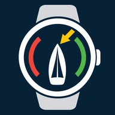

WRISTFIX
Privacy policy
Last updated: 19 November 2026
Summary
WRISTFIX does not collect, store or share any personal data. It has no user accounts, no analytics and no advertising.
What the app uses, and where it stays
- Your boat's data (position, depth, wind, AIS, engine, tanks, batteries, autopilot): read from your boat's network over your local WiFi and sent from your phone to your paired watch over Bluetooth. It never leaves your devices.
- Your settings (gateway address, names of tanks and batteries, alarm thresholds, units, SignalK user and password): saved only on your phone.
- Location: WRISTFIX uses your boat's GPS position from the boat's network, not your phone's location. It is used on the device to draw the plotter, run the anchor alarm and man overboard, and switch night mode.
Internet connections
The only connections to the internet are requests for chart tiles from OpenFreeMap and OpenSeaMap, to draw the plotter and to download offline areas. These requests contain the map area being drawn, as any map app does, but no personal data or identifiers.
Data sent to your boat
Only if you enable it: man overboard alarms to your chartplotters and commands to your autopilot, sent over your boat's own network.
Children
WRISTFIX is not directed at children.
Contact
RDRP Studio · delrosalr@gmail.com